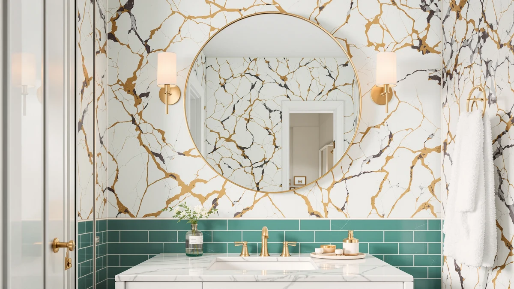

Laventis Bathroom Mirrors Review (2026): Worth It?
Prices and picks verified as of November 2026. Independent, reader-supported reviews.


Quick Answer
For most bathrooms that need a matching pair of mirrors for a double-sink vanity, the Laventis 2 Pack Brushed Nickel is the strongest pick in this laventis bathroom mirrors review at $139.99, thanks to its tempered glass and aluminum build sized for two 24 by 36 inch mirrors. If a single recessed mirror or built-in LED lighting matters more to you than a matching pair, the TokeShimi, USHOWER, or SBAGNO alternatives below are each worth a look.
Our pick: Laventis 2 Pack Brushed Nickel, $139.99 Check Price on Amazon
Bottom line: our top pick is the Laventis 2 Pack Brushed Nickel Bathroom Mirrors for Over Sink at $139.99.
Things to Know Before You Buy
- A 2-pack set like the Laventis only makes sense if your bathroom has two separate mirror spots to fill, such as a double-sink vanity. If you only need one mirror, the TokeShimi recessed pick or the SBAGNO's single LED panel is the better fit.
- Tempered glass and an aluminum frame, the build behind the Laventis and USHOWER mirrors, resist the chipping and discoloration that lower-cost acrylic frames show after a few years of bathroom humidity.
- Recessed mirrors like the TokeShimi sit flush against the wall rather than projecting outward, which matters in a tight bathroom where a framed mirror's depth would crowd a towel bar or light fixture.
- LED and Bluetooth features, like the dimmable lighting and three color temperatures on the SBAGNO, add functionality but also add wiring requirements that a plain framed mirror like the Laventis does not need.
- All four mirrors in this comparison fall within $10 of each other, so the deciding factor is usually frame finish, mirror count, or lighting rather than price.
This laventis bathroom mirrors review looks at the 2 Pack Brushed Nickel set's build, size, and price against three close alternatives to help you decide if it belongs on your bathroom wall. The set pairs two 24 by 36 inch mirrors in a brushed nickel frame, built from tempered glass and aluminum, and priced at $139.99 for the pair.
We compared the Laventis against the TokeShimi 14 x 24 Recessed, the USHOWER 2-Pack Black Bathroom Mirrors, and the SBAGNO 24x32 LED Bluetooth bathroom vanity mirror on frame material, size, and current Amazon pricing rather than installing any of them ourselves. Of the four, the Laventis 2 Pack Brushed Nickel comes out ahead for anyone who needs a matching pair of mirrors for a double-sink vanity, since none of the three alternatives below ship as a set.
Why You Should Trust Us
Ilane Tall covers bathroom mirrors and vanity fixtures for Best Bathroom Mirrors, with a focus on how a listing's stated materials and dimensions compare across similarly priced products. We do not run a fake testing lab, and we have not mounted the Laventis 2 Pack Brushed Nickel or its alternatives on our own wall. Instead, we compare manufacturer specifications, current Amazon pricing, and the detail available in product listings, then flag where a description runs ahead of what is documented. Every price and dimension in this laventis bathroom mirrors review comes directly from the product listing, not from a sponsored placement.
Our Research Experience
Our research process for this laventis bathroom mirrors review starts with the manufacturer's listed specifications: frame material, finish, mirror dimensions, and pack count. From there we compare current Amazon pricing across the Laventis and its three alternatives to see where the cost difference comes from, whether that is mirror count, frame finish, or added lighting hardware. We also check whether a listing has a published rating or review count, since an LED and Bluetooth mirror like the SBAGNO draws on a different base of verified owner feedback than a plain framed set like the Laventis or USHOWER. We did not purchase, install, or mount any of these mirrors ourselves, since this is a research-based comparison built from listed specs, prices, and owner feedback rather than a physical trial.
Overview & Specs

Laventis 2 Pack Brushed Nickel
What we like
- Tempered glass and an aluminum frame resist the chipping and discoloration that acrylic-framed mirrors show over time in a humid bathroom
- The set includes two 24 by 36 inch mirrors, enough to cover a double-sink vanity without buying two separate listings
- Brushed nickel finish matches common faucet and hardware finishes already found in many bathrooms
Flaws but not dealbreakers
- At $139.99, it costs $10 more than the USHOWER and SBAGNO alternatives covered below
- The listing does not include built-in lighting, so a dim bathroom will need separate vanity sconces or an LED alternative like the SBAGNO
- No published customer rating or review count is available at the time of writing, so you are relying on the manufacturer's own specifications rather than a track record of verified owner feedback
| Material | Tempered glass + aluminum |
| Size | 24''L x 36''W-2PCS |
The Laventis 2 Pack Brushed Nickel pairs two 24 by 36 inch mirrors in a tempered glass and aluminum build, a combination chosen to outlast the yellowing and warping that acrylic-backed mirrors tend to show after a year or two of bathroom humidity. Buying the pair as a single listing also means both mirrors arrive in a matching brushed nickel finish, which matters if your double-sink vanity sits under one light fixture and two mismatched mirrors would stand out.
At $139.99 for the pair, the Laventis sits at the top of the price range covered in this laventis bathroom mirrors review, about $10 above the USHOWER and SBAGNO alternatives below. That premium buys you two matching mirrors rather than one, which is the main reason it holds the top spot here. Buyers who only need a single mirror, or who want built-in LED lighting, will find a better price-to-feature match in one of the three alternatives covered later in this review.
Broken down per mirror, the Laventis works out to roughly $70 each, which lands close to the USHOWER's per-unit cost once you account for the USHOWER's lower $129.99 pair price. The gap narrows further if you weigh the aluminum frame against the USHOWER's comparable build, since both rely on the same tempered glass construction rather than acrylic. Where the two sets differ most is finish: brushed nickel for the Laventis against a black frame on the USHOWER, so the choice between them often comes down to what your existing faucet and cabinet hardware already match.
What We Liked
The combination of tempered glass and an aluminum frame is the strongest argument for this set. Mirrors built around acrylic or plastic frames tend to show warping or discoloration within a year or two of regular bathroom humidity, and the aluminum construction here avoids that failure point since metal does not degrade the way acrylic does under repeated moisture exposure.
We also like that the Laventis ships as a matched pair rather than a single mirror. For a double-sink vanity, buying one listing that guarantees both mirrors share the same brushed nickel finish and the same 24 by 36 inch size removes the risk of ordering two separate mirrors that turn out to be subtly different shades of nickel. That consistency is harder to guarantee when you buy two single mirrors from different listings, since finish names like "brushed nickel" vary slightly between manufacturers.
What Could Be Better
Price is the clearest drawback we found while researching this laventis bathroom mirrors review. At $139.99, the Laventis costs about $10 more than the USHOWER and SBAGNO alternatives covered below, and the listing does not include any lighting or smart features that would help explain that premium beyond giving you two mirrors instead of one.
The listing also does not include a published rating or review count at the time of writing, so you are relying more on the manufacturer's own specifications than on a track record of verified owner feedback. That is worth factoring in if you prefer to buy mirrors with an established review history behind them. The two-mirror format also assumes both spots on your wall need the identical frame, which is not always true in bathrooms where one mirror sits above a sink and the other serves a separate vanity area with a different look.
Who Is It For?
This set fits a bathroom with two separate mirror spots, most often a double-sink vanity, where you want both mirrors to match without ordering two separate listings and hoping the finishes line up. It suits buyers who have already measured roughly 24 by 36 inches of wall space per mirror and want a brushed nickel finish specifically, which is the main audience this laventis bathroom mirrors review is written for.
If you only need a single mirror, or your bathroom calls for a recessed mount or built-in lighting, one of the three alternatives below is likely the better starting point. They cover a similar size range at the same or a lower price, with different mounting styles and features.
Alternatives to Consider
If the Laventis's two-mirror format or brushed nickel finish does not fit what your bathroom needs, these three alternatives covered in this laventis bathroom mirrors review offer different sizes, finishes, and features at the same or a lower price.

Best Value
TokeShimi 14 x 24 Recessed
A single recessed mirror that mounts flush into the wall instead of projecting outward, priced $10 below the Laventis pair.
$129.99
Check Price on Amazon
Best Value
USHOWER 2-Pack Black Bathroom Mirrors
The same 2-pack format as the Laventis in a black frame instead of brushed nickel, for $10 less.
$129.99
Check Price on Amazon
Best Value
SBAGNO 24x32 LED-Bathroom-Mirror-with-Bluetooth Dimmable-Lighted-Bathroom-Vanity-Mirror-with-3-Colors，Backlit +
A single 24 by 32 inch LED mirror with Bluetooth audio and dimmable lighting, priced below the Laventis pair despite the added features.
$129.99
Check Price on AmazonFrequently Asked Questions
Is the Laventis 2 Pack Brushed Nickel worth $139.99?
How does the Laventis compare to the TokeShimi, USHOWER, and SBAGNO alternatives?
Does the Laventis or any of its alternatives need an electrician to install?
Final Verdict
This laventis bathroom mirrors review comes down to how much value you place on buying a matched pair over a single mirror. The Laventis 2 Pack Brushed Nickel earns the top spot here because its tempered glass and aluminum build and its two 24 by 36 inch mirrors in a single matching finish solve a double-sink vanity's mirror needs in one order, rather than making you hunt for two listings that happen to match. At $139.99 it costs more than the three alternatives in this comparison, and buyers who only need one mirror should look at the TokeShimi, USHOWER, or SBAGNO alternatives above before paying for a pair they do not need. For a double-sink bathroom that wants two matching brushed nickel mirrors, Laventis makes the case for itself.